in German by Matthias Raess
in Simplified Mandarin by Jimmy Lin
in Tradititional Mandarin by Jimmy Lin
in Spanish by Jose Miguel Arrieta
Bayesian inference is a way to get sharper predictions from your data. It’s particularly useful when you don’t have as much data as you would like and want to juice every last bit of predictive strength from it.
Although it is sometimes described with reverence, Bayesian inference isn’t magic or mystical. And even though the math under the hood can get dense, the concepts behind it are completely accessible. In brief, Bayesian inference lets you draw stronger conclusions from your data by folding in what you already know about the answer.
Bayesian inference is based on the ideas of Thomas Bayes, a nonconformist Presbyterian minister in London about 300 years ago. He wrote two books, one on theology, and one on probability. His work included his now famous Bayes Theorem in raw form, which has since been applied to the problem of inference, the technical term for educated guessing. The popularity of Bayes' ideas was aided immeasurably by another minister, Richard Price. He saw their significance, refined them and published them. It would be more accurate and historically just to call Bayes' Theorem the Bayes-Price Rule.
Bayesian inference at the movies
Imagine you are at the movies and a fellow moviegoer drops their ticket. You want to get their attention. This is what they look like from behind. You can’t tell their gender, only that they have long hair. Do you call out “Excuse me ma’am!” or “Excuse me sir!” Given what you know about men’s and women’s hairstyles in your area, you might assume that this is a woman. (In this oversimplification, there are only two hair lengths and genders.)
Now consider a variation of the situation where this person is standing in line for the men’s restroom. With this additional piece of information, you would probably assume that this is a man. This use of common sense and background knowledge is something that we do without thinking. Bayesian inference is a way to capture this in math so that we can make more accurate predictions.
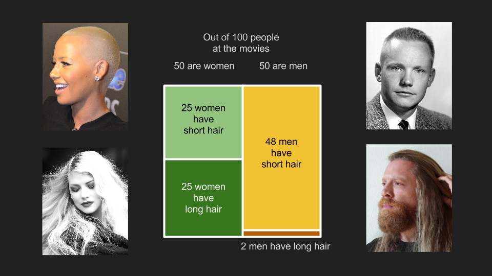To put numbers to our cinema dilemma, let’s assume that there are about half men and half women at the theater. Out of 100 people, 50 are men, 50 are women. Out of the women, half have long hair (25) and the other 25 have short hair. Out of the men, 48 have short hair and 2 have long hair. Since there are 25 long haired women and 2 long haired men, guessing that the ticket owner is a woman is a safe bet.
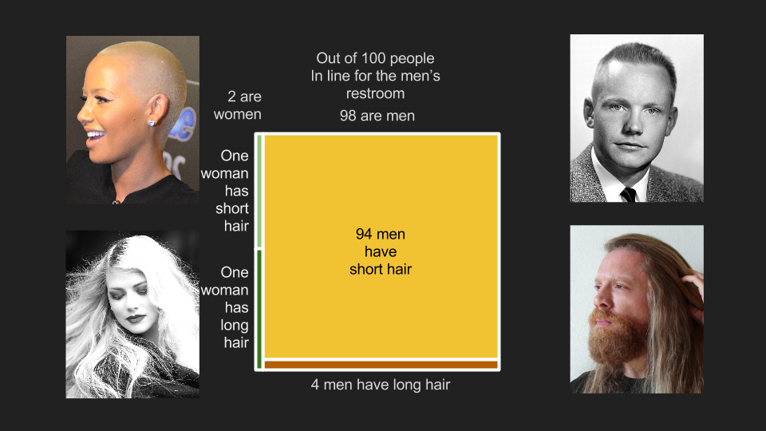Out of 100 people in the men’s restroom line, however, there are 98 men and two women keeping their partners company. Half the women still have long hair and half have short hair, but here there are just one of each. The proportions of men with long and short hair are the same too, but since there are 98 of them, there are now 94 with short hair and 4 with long. Since there is 1 woman with long hair and four men, now the safe bet is that the ticket owner is a man. This is a concrete example of the principle underlying Bayesian inference. Knowing a key piece of information beforehand - that the ticket owner is in the men’s restroom line - allows us to make a better prediction about them.
To clearly talk about Bayesian inference, it is worth our time to really clearly define our ideas. Unfortunately, this requires using math. We’ll avoid going deeper than we have to, but stick with me for a few more paragraphs and it will pay off. To lay our foundation, we need to quickly mention four concepts: probabilities, conditional probabilities, joint probabilities and marginal probabilities.
Probabilities
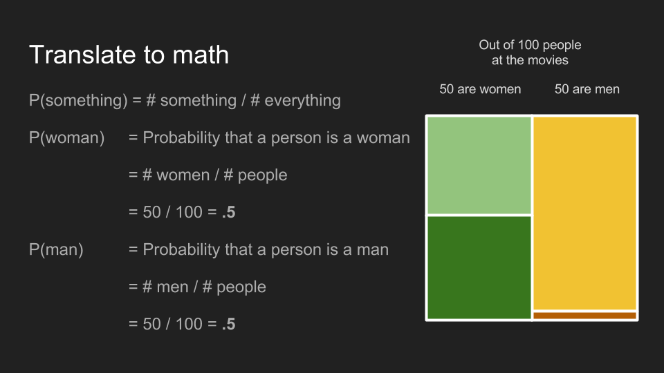The probability of a thing happening is the number of ways that thing can happen divided by the total number of things that can happen. The probability that a moviegoer is a woman is 50 women divided by 100 moviegoers, .5 or 50%. The same holds for men.
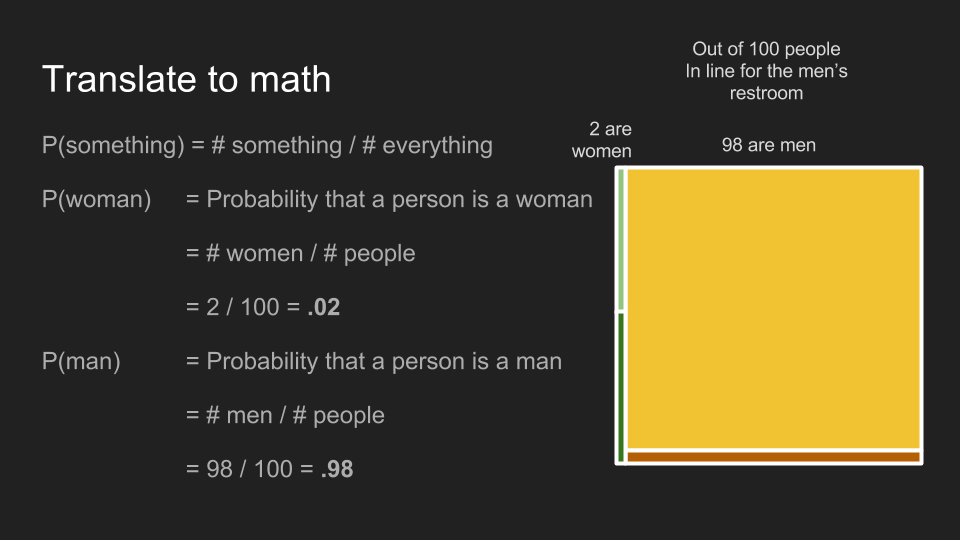The situation in men’s restroom line breaks down to .02 for women, .98 for men.
Conditional probabilities
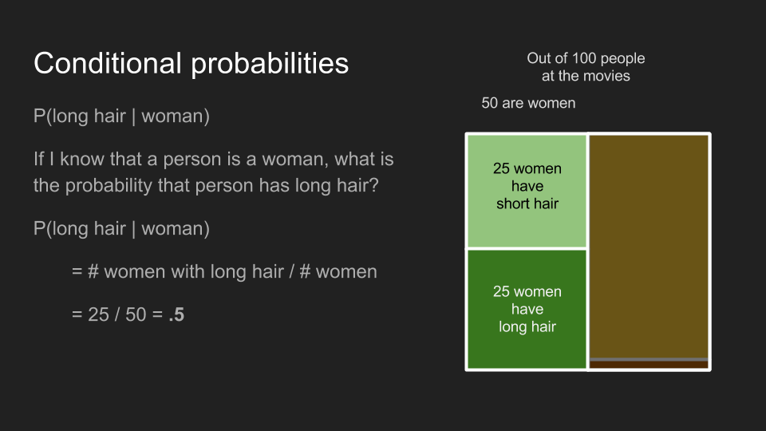Conditional probabilities answer the question “If I know that a person is a woman, what is the probability that she has long hair?” Conditional probabilities are calculated the same way as straight probabilities, but they just look at a subset of all the examples - those meeting a certain condition. In this case, P(long hair | woman), the conditional probability that someone has long hair, given that she is a woman, is the number of women with long hair, divided by the total number of women. This turns out to be .5, whether we are considering the men’s restroom line, or the theater overall.
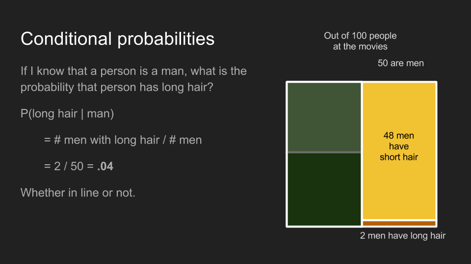By the same math, the conditional probability that someone has long hair, given that he is a man, P(long hair | man), is .04, whether or not they are in line.
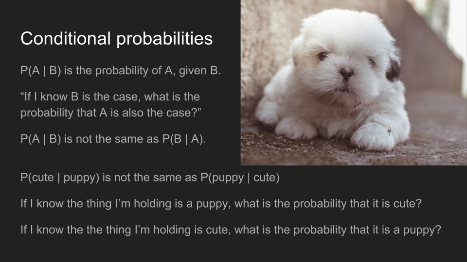An important thing to remember about conditional probabilities is that P(A | B) is not the same as P(B | A). For example, P(cute | puppy) is different than P(puppy | cute). If the thing I’m holding is a puppy, the probability it is cute is very high. If the thing I’m holding is cute, the probability it is a puppy is only medium-low. It might also be kitten, a bunny, a hedgehog or even a tiny human.
Joint probabilities
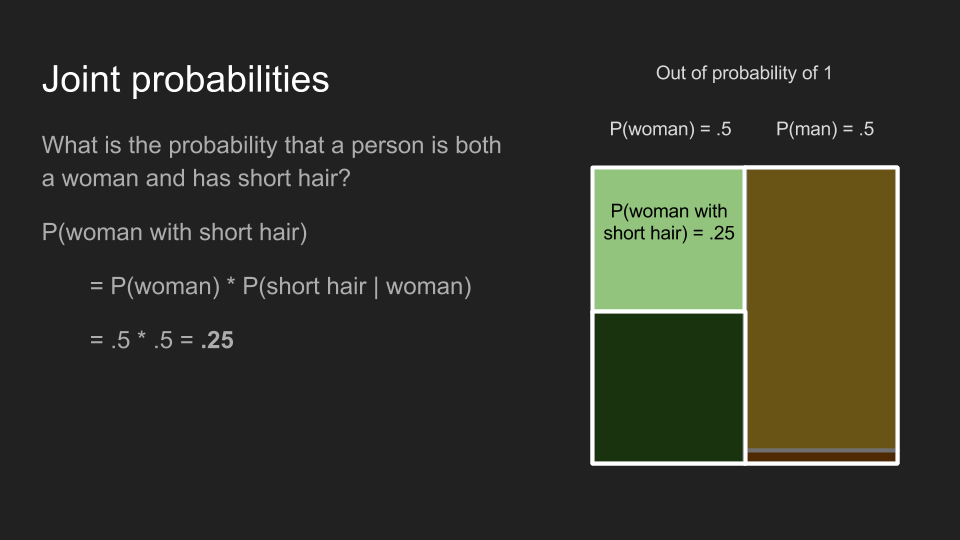Joint probabilities are useful for answering the question, “What is the probability that someone is a woman with short hair?” Finding this is a two-step process. First, we focus on the probability that someone is a woman, P(woman). Then, we bring in the probability that someone has short hair, given that she is a woman, P(short hair | woman). Combining these by multiplication gives the joint probability, P(woman with short hair) = P(woman) * P(short hair | woman). Using this approach, we can calculate what we already knew--that P(woman with long hair) among all moviegoers is .25, but that P(woman with long hair) in the men’s restroom line is .01. These are different because P(woman) is different in these two cases.
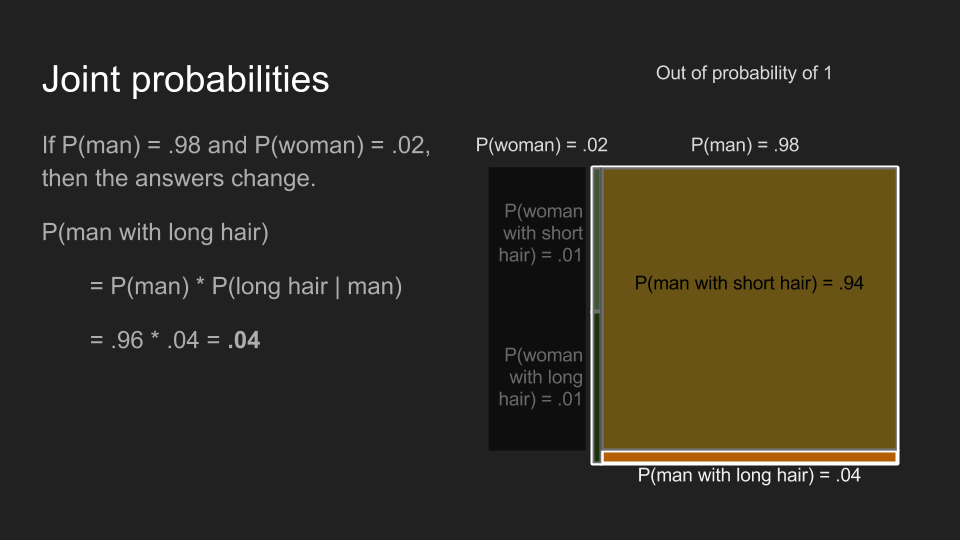Similarly, P(man with long hair) is .02 among all moviegoers, but .04 in the men’s restroom line.
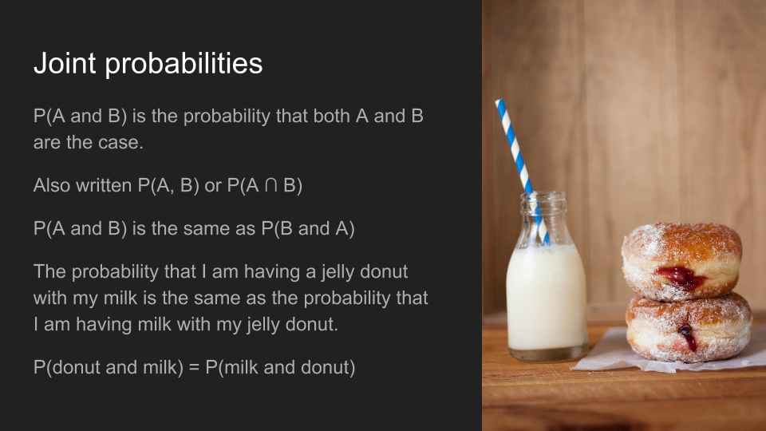Unlike conditional probabilities, joint probabilities don’t care about order. P(A and B) is the same as P(B and A). The probability that I am having milk and a jelly donut is the same as the probability that I am having a jelly donut and milk.
Marginal probabilities
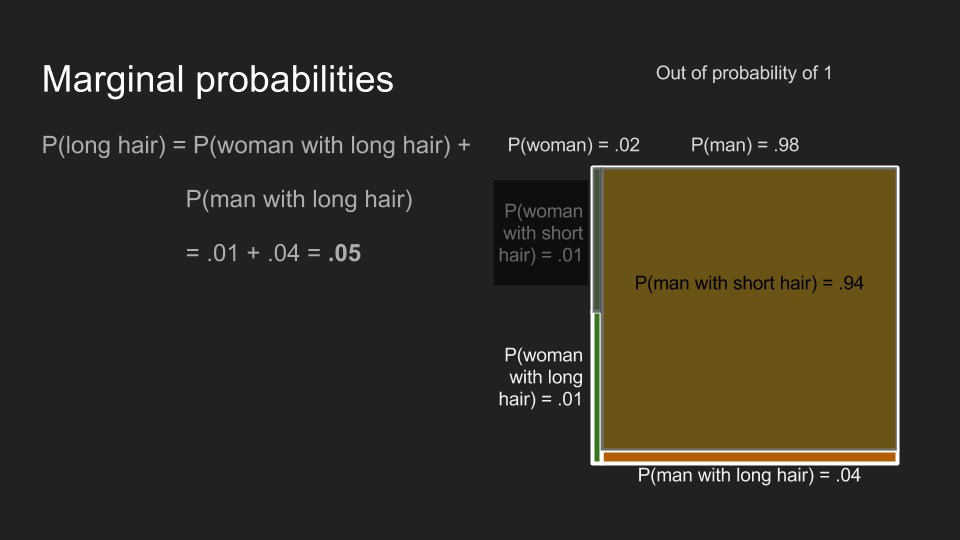The last stop on our fundamentals tour is marginal probabilities. These are useful for answering the question “What is the probability that someone has long hair?” To find this, we have to add up the probabilities for all the different ways this could happen - the probability of being a man with long hair plus the probability of being a woman with long hair. Adding up those two joint probabilities gives us P(long hair) of .27 for moviegoers generally, but .05 in the men’s restroom line.
Bayes’ theorem
So now we get to the part that we really care about. We want to answer the question “If we know someone has long hair, what is the probability that they are a woman (or a man)?” This is a conditional probability, P(man | long hair), but the reverse of the one we already found, P(long hair | man). Since conditional probabilities are not reversable, we can’t say anything about the new conditional probability yet.
Luckily Thomas Bayes noticed something cool that can help us.
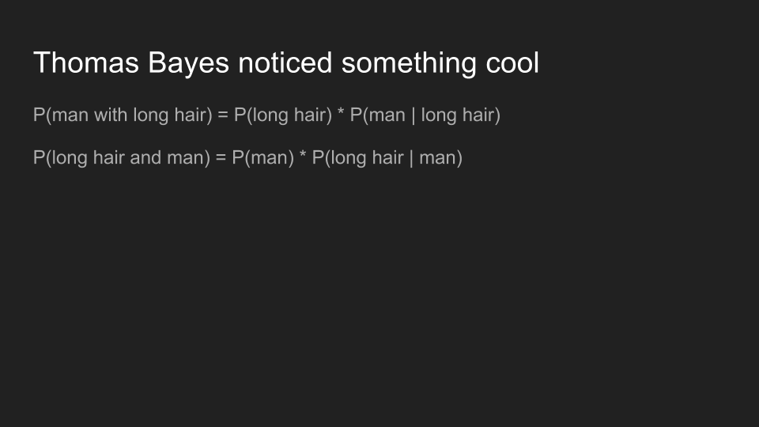Remembering how we calculated joint probabilities, we can write the equations for P(man with long hair) and P(long hair and man). Because joint probabilities are reversable, these two things are equal.
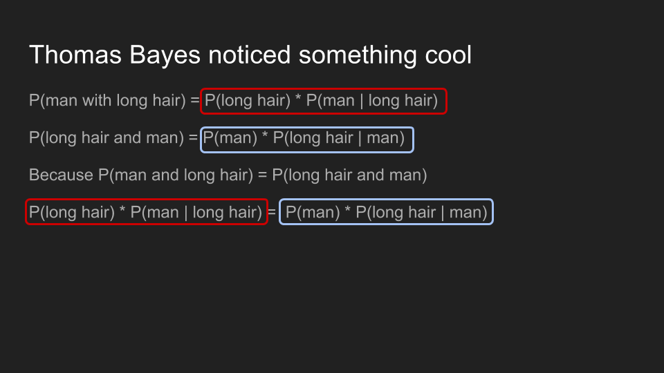With a little bit of algebra, we can solve for the thing we care about, P(man | long hair).
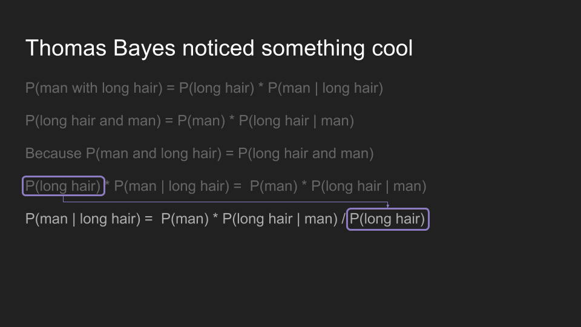Expressed in terms of A and B, instead of “man” and “long hair” we get Bayes’ Theorem.
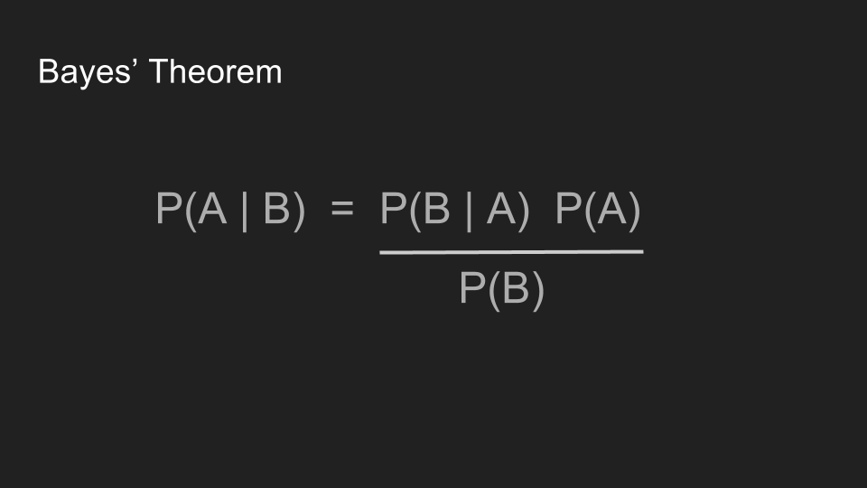Finally we are ready to go back and solve our movie ticket dilemma. We have Bayes’ Theorem applied to our problem.
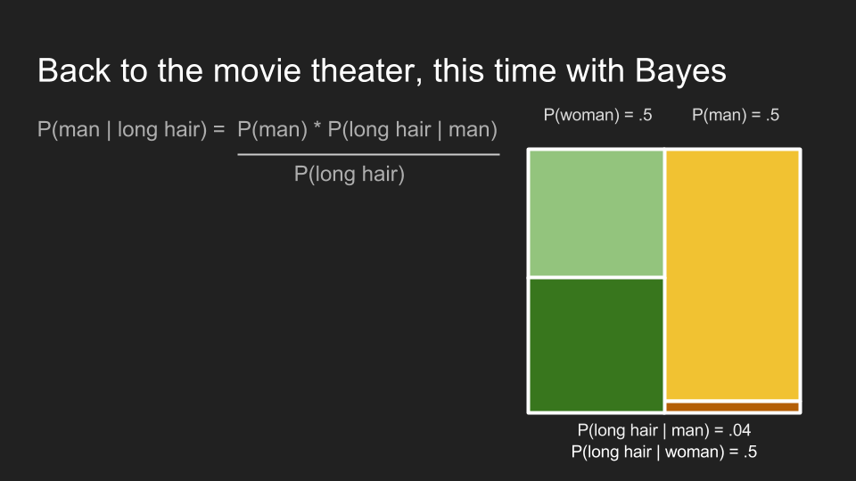First we need to expand our marginal probability, P(long hair).
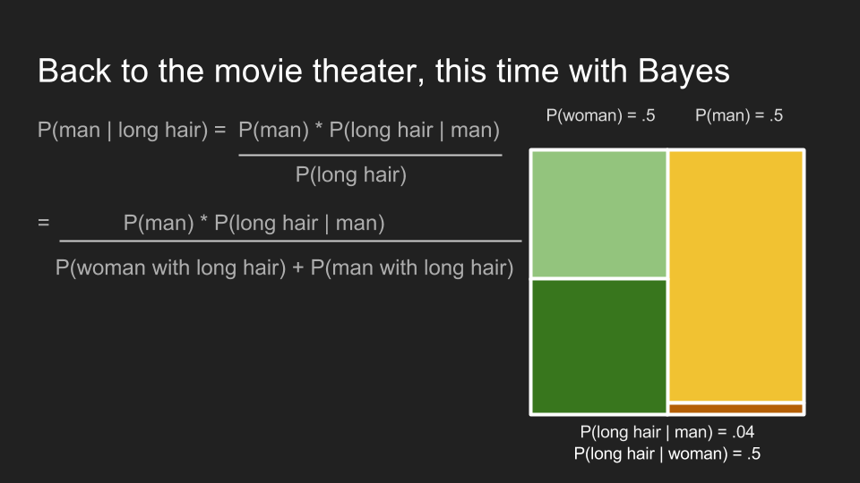Then we can plug in our numbers and calculate the probability that someone is a man, given that they have long hair. For moviegoers in the men’s restroom line, P(man | long hair) is .8. This confirms our intuition that the ticket dropper is probably a man. Bayes’ Theorem has captured our intuition about the situation. Most importantly, it has incorporated our pre-existing knowledge that there are far more men than women in the men’s restroom line. Using this prior knowledge, it updated our beliefs about the situation.
Probability distributions
Examples like the theater dilemma are good for explaining where Bayesian inference comes from and showing the mechanics in action. However, in data science applications it most often used to interpret data. By pulling in prior knowledge about what we are measuring, we can draw stronger conclusions with small data sets. I’ll show how this works in detail, but first please bear with me for one more side track. We need to get clear about what we mean by “probability distributions.”
You can think of probability as a pot of coffee that has exactly enough left to fill one cup. If there’s only one cup to fill there’s no problem, but if you have more than one you have to decide how to distribute the coffee between the cups. You can split it however you like, as long as you pour out all the coffee into one cup or the other. At the movie theater, one mug might represent women and the other, men.
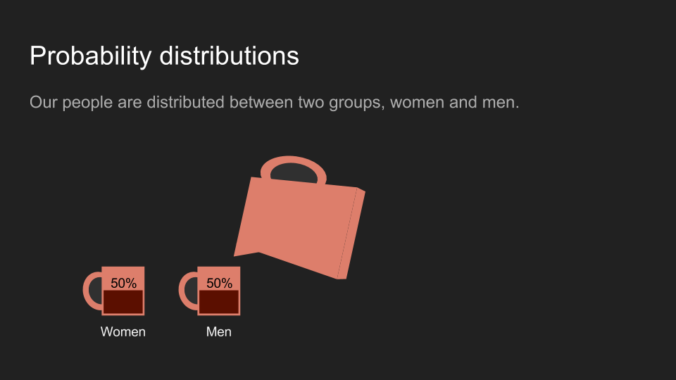Or we could use four mugs to represent the distribution of all combinations of gender and hair length. In both cases, the total amount of coffee adds up to one cup.
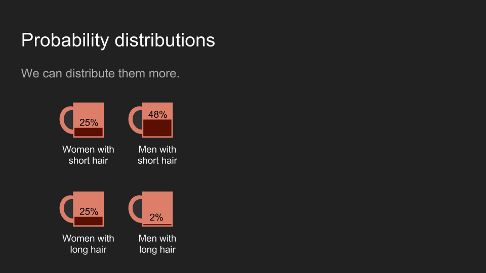Usually, we set these mugs side by side and look at the amount of coffee in each as a histogram. It can be helpful to think of coffee as our belief, and its distribution shows how strongly we believe something to be the case.
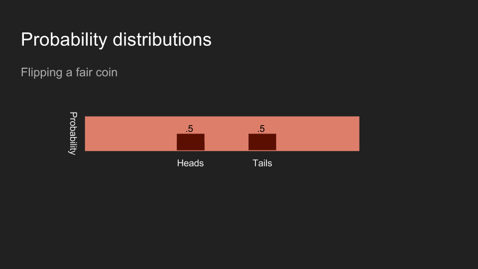If I flip a coin and hide the result from you, then your belief will be evenly split between heads and tails.
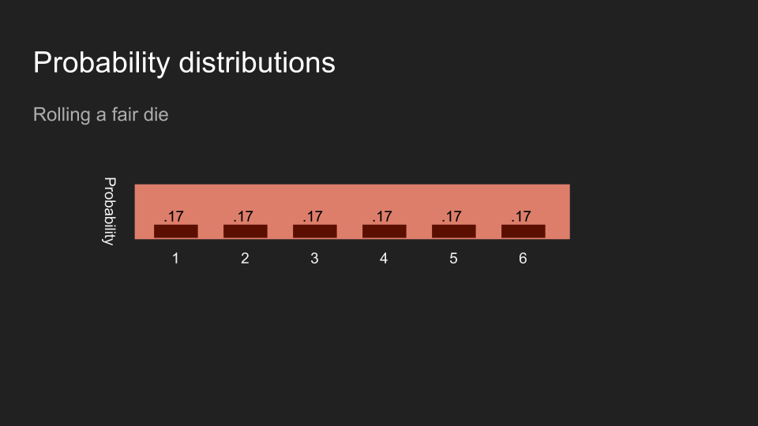If I roll a die and hide the result from you, then your belief about the number on top will be evenly split between each of the six sides.
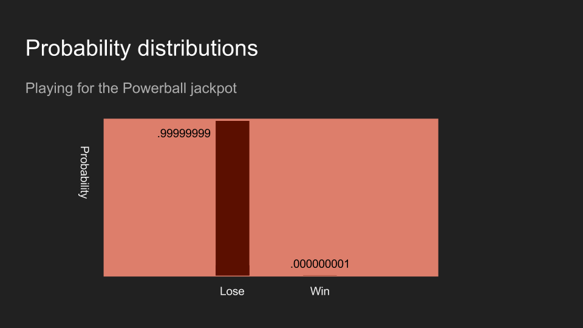If I buy a powerball ticket, your belief that it is a winner will probably be very close to zero. The coin flip, the die roll, the powerball outcome - these are each an example of measuring and collecting data.
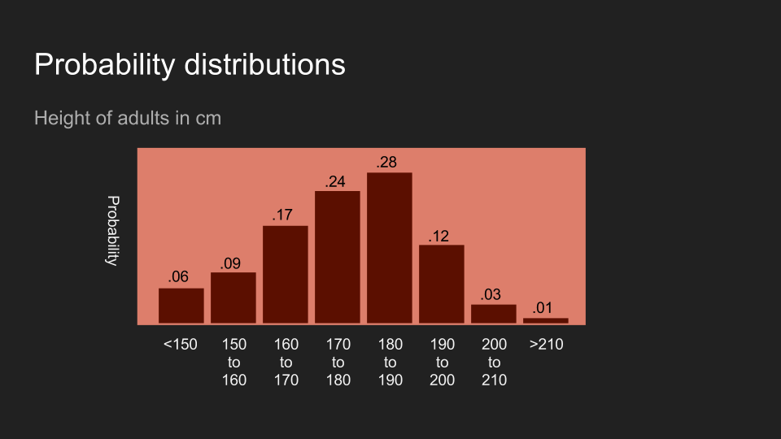Not surprisingly, you can also hold beliefs about other collected data. Consider the height of adults in the US. If I tell you I have met and measured someone, then your beliefs about their height might look like the picture above. This shows a belief that this person is probably between 150 and 200 cm, and most likely between 180 and 190 cm.
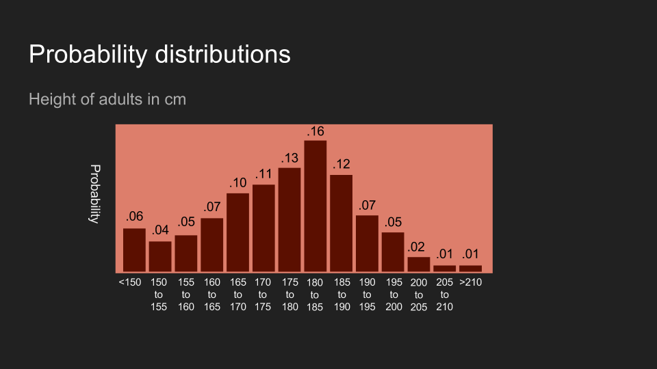Distributions can be broken up into finer and finer bins. You can think of it as spreading less coffee across more cups to get a finer-grained set of beliefs.
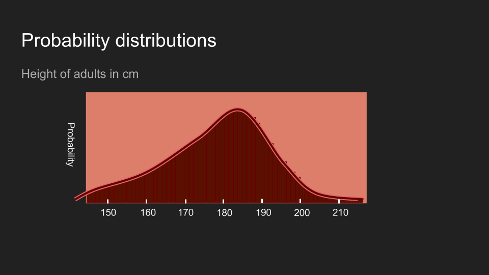Eventually the number of imaginary cups you need gets so large that the analogy breaks down. At that point the distribution is continuous. The math to work with it changes a bit, but the underlying idea is still useful. It is shows how your belief is allocated.
Thanks for your patience. Now with probability distributions described, we can use Bayes’ Theorem to interpret data. To illustrate this, we’ll weigh my dog.
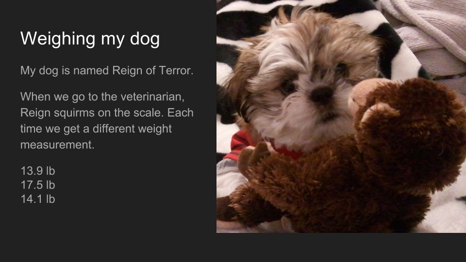Bayesian inference at the veterinarian
My dog is named Reign of Terror. When we go to the vet, she squirms on the scale. That makes it hard to get an accurate reading. Getting an accurate weight is important, because if her weight has gone up, we have to reduce her food intake. She loves her food more than life itself, so the stakes are high.
On our last visit, we got three measurements before she became unmanageable: 13.9 lb, 17.5 lb and 14.1 lb. There is a standard statistical interpretation for this. We can calculate the mean, standard deviation and standard error for this set of numbers and create a distribution for Reign’s actual weight.
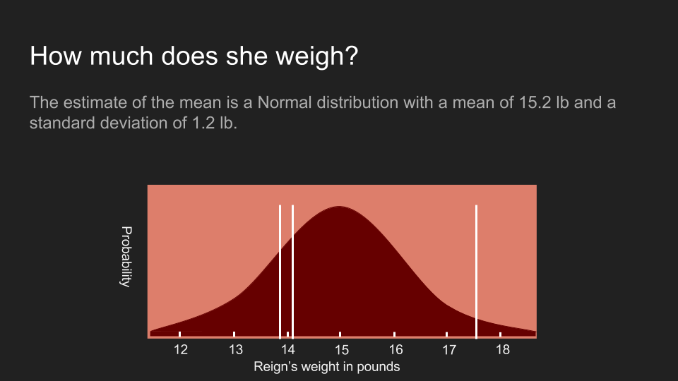This distribution shows what we believe about her weight using this approach. It is normally distributed with a mean of 15.2 pounds and standard error of 1.2 pounds. The actual measurements are shown as white lines. Unfortunately this curve is unsatisfyingly wide. While at the peak is at 15.2 pounds, the probability distribution shows that it could easily be as low as 13 pounds or as high as 17 pounds. It's much too wide a range to make any kind of confident decision. When confronted with results like this, it is common to return and gather more data, but in some cases this is not feasible or is too expensive. In our case, Reign’s patience had been used up. We’re stuck with the measurements we already have.
This is where Bayes’ Theorem comes in. It is useful in making the most out of small data sets. Before we apply it, it's useful to revisit the equation and look at the various terms.

We substitute “w” (weight) and “m” (measurements) for “A” and “B” to make it clear how we’re going to use it. The four terms each represent a different part of the process.
It's not a terrible idea to start by being perfectly agnostic and making no assumptions about the result. In this case, we assume that Reign’s weight is equally likely to be 13 pounds or 15 pounds or 1 pound or 1,000,000 pounds and let the data speak. To do this, we assume a uniform prior, meaning that its probability distribution is a constant for all values. This lets us reduce Bayes’ Theorem to P(w | m) = P(m | w).
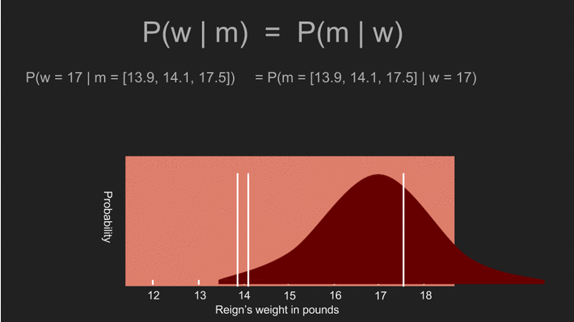At this point we can use every possible value of Reign’s weight and calculate the likelihood of getting our three measurements. For instance, our measurements would be extremely unlikely if Reign’s weight was one thousand pounds. However they would be quite likely if her weight was actually 14 pounds or 16 pounds. We can go through and, using every hypothetical value of her weight, calculate the likelihood of us getting the measurements that we got. This is P(m | w). Thanks to our uniform prior, this is also P(w | m), the posterior distribution.
It's not a matter of chance that this looks a lot like the answer we got by taking the mean, standard deviation and standard error. In fact the two are exactly the same. Using a uniform prior gives the traditional statistical estimate of the result. The location of the peak of this curve, the mean, at 15.2 pounds is also called the maximum likelihood estimate (MLE) of the weight.
Although we used Bayes’ Theorem, we’re still no closer to a useful estimate. To get this, we will need to make our prior non-uniform. A prior distribution represents our beliefs about something before we take any measurements. A uniform prior shows that we believe every possible outcome is equally likely. This is rarely the case. We often know something about the quantity we are measuring. Ages are always greater than zero. Temperatures are always greater than -276 Celsius. Adult heights are rarely greater than 8 feet. And sometimes we have additional domain knowledge that some values are more likely to occur in others.
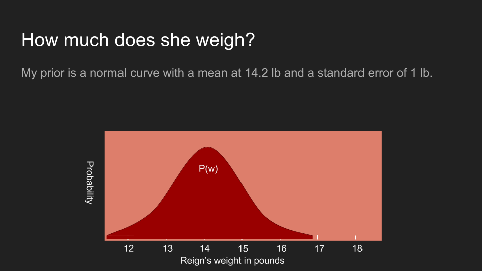In Reign’s case I do have additional information. I know that the last time I came to the vet she weighed in at 14.2 pounds. I also know that she doesn't feel noticeably heavier or lighter to me, although my arm is not a very sensitive scale. Because of this, I believe that she's about 14.2 pounds but might be a pound or two higher or lower. To represent this, I use a normal distribution with a peak at 14.2 pounds and with a standard deviation of a half pound.
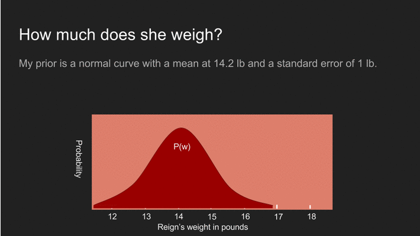With a prior in place, we can repeat the process of calculating our posterior. To do this, we consider the possibility that Reign’s weight is a certain value, say 17 pounds. Then we multiply the likelihood that she is actually 17 pounds (according to our prior) by the conditional probability of getting the measurements we did if she was 17 pounds. Then we repeat this for every other possible weight. The effect of the prior is to squash is down some probabilities and amplify others. In our case, it puts more weight on measurements in the 13-15 pound range, and much less weight on measurements outside it. This is in contrast to the uniform prior. It gave a decent possibility that Reign’s actual weight was 17 pounds. With the non-uniform prior, 17 pounds falls toward the tail of the distribution. Multiplying by that possibility drives the likelihood of a 17 pound weight down very low.
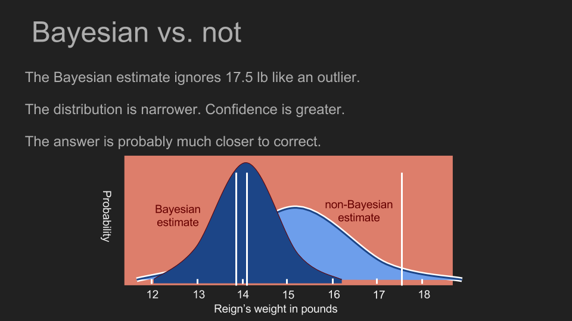By calculating the probability of each possible weight for Reign, we generate a new posterior. The peak of the posterior distribution is also known as the maximum a posteriori estimate or MAP, in our case 14.1 pounds. This is noticeably different than what we calculated before with a uniform prior. It's also a much narrower peak, which allows us to make a more confident estimate. Now we can see that Reign’s weight hasn’t changed much and her portion size can stay where it is.
By incorporating what we already knew about what we were measuring, we were able to make a more accurate estimate with more confidence than we would have been able to otherwise. It allowed us to make good use of a very small data set. Our prior assigned a very low probability to our 17.5 pound measurement. This is almost the same as rejecting the measurement as an outlier. But instead of doing outlier detection based on intuition and common sense, Bayes’ Theorem allows us to do it in with math.
As a side note, we assumed that the P(m) term was uniform, but if we happened to know that our scale was biased in some way, we could have reflected that in our P(m). If the scale only reported even numbers or returned a reading of “2.0” ten percent of the time, or generated random measurements every third try, we could have crafted P(m) to reflect this and it would have improved the accuracy of our posterior.
Avoiding Bayesian traps
Weighing Reign showed the benefits of Bayesian inference, but there are also pitfalls. We improved our estimate by making some assumptions about the answer, but the whole purpose of measuring something is to learn about it. If we assume that we already know the answer then we may be censoring the data. Mark Twain put the danger of strong priors succinctly. “It ain't what you don't know that gets you into trouble. It's what you know for sure that just ain't so.”
If we were to start with a strong prior assumption that Reign’s weight is between 13 and 15 pounds, then we would never be able to detect if her weight had actually fallen to 12.5. Our prior would assign zero probability to that outcome, and every measurement we got below 13 pounds would be disregarded, no matter how many times we measured.
Luckily, there is a way to hedge our bets and avoid blindly eliminating possibilities. That is to assign at least a small probability to every outcome. That way, if by some quirk of physics Reign actually did weigh 1,000 pounds, the measurements that we gathered would be able to reflect that in the posterior. This is one reason that normal distributions are commonly used as priors. They concentrate most of our belief around a small range of outcomes, but have very long tails that never become entirely zero no matter how far they stretch.

In this, the Red Queen provides a good role model:
Alice laughed: "There's no use trying," she said; "one can't believe impossible things."
"I daresay you haven't had much practice," said the Queen. "When I was younger, I always did it for half an hour a day. Why, sometimes I've believed as many as six impossible things before breakfast."
- Lewis Carroll (Alice’s Adventures in Wonderland)
Corrections: Thank you to those who have spotted typos and errors! I owe each of you a beverage of your choice: Justin Fortier and Irina Max.